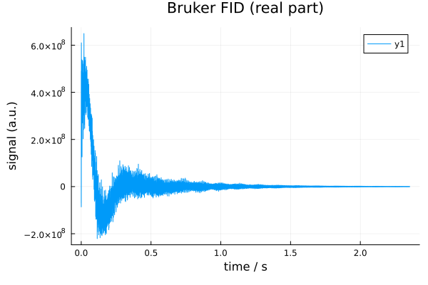
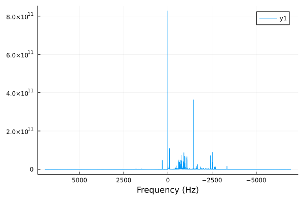

Quick Start
NMRflux.jl brings vendor aware loading, coordinate aware data, classical NMR processing, and spin simulation into one Julia workflow. This page walks the basic path: install the package, load a dataset into SpectData, process a 1D FID with a composable Chain, and see how the same public interfaces support the external RINSE machine learning demonstrator.
1. Installation
import Pkg
Pkg.add(url = "https://github.com/utzgroup/NMRflux.jl.git")Then:
using NMRflux2. Load a dataset into SpectData
NMRflux reads Bruker, JEOL, Magritek Spinsolve, Varian/Agilent, and Oxford Instruments data. The example below uses the bundled Bruker dataset, so nothing needs downloading first.
using NMRflux
using NMRflux.Examples
using Plots: plot, plot!, savefig
data_bruker = NMRflux.Examples.Data["HCC cell culture media spectra"]
params_bruker, data_td = NMRflux.load(joinpath(data_bruker["path"], "10"), :Bruker)
plot(data_td;
xlabel = "time / s",
ylabel = "signal (a.u.)",
title = "Bruker FID (real part)")
NMRflux.load returns two things: a dictionary of acquisition parameters straight from the vendor file, and a SpectData object holding the time domain signal together with its time axis. Which kind of path each vendor expects, and what each loader does to the raw data, is set out in Loading NMR Data.
In NMRflux.jl, processing is implemented via NMRProcessor functors that can be composed using Chain.
Here is a minimal example of a processing pipeline:
Processing = Chain(
ZeroFill(SI=2^16),
FourierTransform(),
AutoPhaseCorrectChen()
)
spectrum = Processing(data_td)
plot(spectrum,xaxis=:flip,xlabel="Frequency (Hz)")
Processing consists of zero filling to 64k points, Fourier transformation, and automatic phase correction.
In practice, other steps may be added, for example a digital filter to remove the solvent artefact (appearing in the middle of the spectrum), apodization (to balance resolution and sensitivity), and baseline correction (to remove distortions due to probe ringing):
dt = step(data_td.coord[1])
Processing = Chain(
ZeroFill(SI=2^16),
Apodize(R=0.5π),
DigitalFilter(BandReject(-0.0025,0.005,1024)), # Digital filter to remove solvent artefact
FourierTransform(),
PhaseCorrect(ph0=0.0,ph1=2pi*1024*dt), # Phase correction
AutoPhaseCorrectChen(), # Automatic phase refinement
MedianBaselineCorrect(wdw=2048),
CoordMap(f->f/700.0+4.83) # change horizontal axis to ppm scale
)
spectrum = Processing(data_td)
integral = spectrum |> Integral(dim=1)
plot(spectrum,xaxis=:flip, xlims=[-0.5,9.0],label="Spectrum", xlabel="Chemical Shift (ppm)")
plot!(integral*20 , xaxis=:flip,label="Integral")
The phase values here belong to this dataset and nothing else. For a new experiment, either read them off an interactive plot or let AutoPhaseCorrectChen find them. Classical Processing Pipeline covers every processor in detail. The same SpectData representation runs through the whole framework, so the output of one processor feeds straight into the next without rebuilding axes or swapping containers.
4. Machine learning use case: RINSE
RINSE is a separately developed machine learning application that uses the public NMRflux interfaces from end to end. It is not part of the NMRflux package or core API. The RINSE workflow uses SpinSim for the underlying spin simulations, SpectData for coordinate aware signals and spectra, NMRflux processors for spectral preprocessing, and its own machine learning code for the learned restoration model. That separation is deliberate. NMRflux supplies the light weight reusable framework; RINSE shows one way to build a specialised application on top of it. See RINSE for the synthetic data generation workflow, the dataset format, the training and inference procedure, and the Zenodo dataset citation.